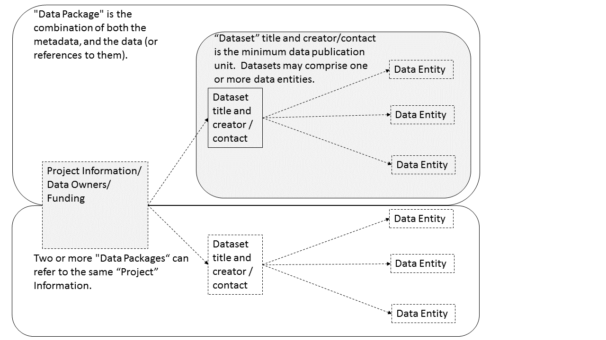

Data Audit Results (Last edited on 2023-10-04)
1 Introduction
This is the result of the HEAL data audit.
First we describe the approach to use a relational data model of linking files within datasets within projects.
Files, Datasets and Projects in the Ecological Metadata Language (EML)
The Ecological Metadata Language (EML) schema is defined by the ‘Knowledge Network for Biocomplexity’ - KNB (https://knb.ecoinformatics.org/#tools/eml).
A schematic diagram of the EML modules:
The figure below shows EML as a hierarchy. An EML document contains a dataset module that allows the grouping of one or more data entities (e.g. a file) linked together by particular rules to form a Data Package. The project module places the dataset that is being documented into its larger research context, and allows multiple related Data Packages to be linked.

Motivation/Justification
- The backend uses a web2py database app, and R helper functions written by Ivan Hanigan
- There is a need for a data inventory tool to enable ecological data collections to be managed more efficiently
- The Ecological Metadata Language (EML) provides an excellent standardised schema for metadata, but the associated software Morpho does not have the flexibility or extensibility that would enable a data manager to use it to manage large and heterogeneous data collections
- KNB is a subproject of Ecoinformatics.org (http://ecoinformatics.org/) an open source collaboration that aims to produce software, systems, and services primarily for the ecological sciences. We apply these to Human Ecology systems too.
XML
A minimal EML document is summarised below. This is a schematic view that shows the structure of an EML XML document. Only a few of the possible components are included. In the graphic above the mandatory component of the EML is shown as a firm line, in contrast with those aspects of the EML which are not mandatory (dotted lines). That is: dataset title, creator and contact are the only required elements for a valid EML Data Package.
<eml>
<dataset>
<title>
<creator>
<contact>
<project>
<title>
<personnel>
<role>
<abstract>
<funding>
<studyAreaDescription>
<designDescription>
<relatedProject>
<associatedParty>
<publisher>
<pubDate>
<keywords>
<abstract>
<intellectualright>
<methods>
<coverage>
<dataTable>
<entityName>
<entityDescription>
<physical>
<attribute>
<additionalMetadata>
<additionalLinks>The parts of an EML document In EML, the term dataset is applied to a document which may contain general information such as the title, creator, and contacts, abstract and keywords as well as one or more data entities, such as datatables, that provide more specific research details.
The information is at the level of a particular data collection or study, however there is also a level above this at the “project” level where research studies can be grouped together.
In EML, the term dataset refers to one or more data entities. However, there is no generally accepted practice on what to include in an EML-dataset document. Some people will choose to have a one-to-one correspondence between an EML document and a data entity and a single physical file. Others will document several data entities in one dataset document.
Below is a brief description of the way we interpret the components of an EML dataset
Datasets
Dataset is the top level of the EML. The miminum necessary to
produce a valid EML document is <title>, <creator>, <contract>. But
one can’t tell very much with just a title and a name. Our aim is to
create an EML document that contains enough information about the data
and research to make funding agencies happy and give other ecologists
something to work with.
Datasets may include one or more data entities such as data tables and spatial images along with associated metadata, but inclusion of data entities are not mandatory. The dataset module enables entities which are linked together to be grouped logically. LTERN groups entities into a single dataset using a range of integrity constraints such as the use of a specific sampling structure or monitoring theme employed over a discrete temporal and geographic range. In the context of the work undertaken by the LTERN Data Portal Team, the term dataset is sometimes used interchangeably with the term data package, however it should be recognised that these are not exactly the same. The dataset module is a part of an EML document which forms the basis for a data package.
In EML, the dataset tag contains general information about a dataset; at minimum this must comprise a title, one Data Creator and a contact (often the Data Creator and contact will be the same). Additional information such as abstract, temporal coverage, keywords, geographic coverage and methods are used to provide context for the published or archived data packages.
For more information about the general EML descriptions see: https://knb.ecoinformatics.org/#external//emlparser/docs/eml-2.1.1/eml-resource.html
For more detailed information about the EML-dataset module see: https://knb.ecoinformatics.org/#external//emlparser/docs/eml-2.1.1/eml-dataset.html
Projects The project module is optional, but in many cases highly desirable as this provides an overall description of the larger-scale project or research context with which that dataset is associated. For example it might be an entire Longterm Ecological Research Network (LTER) site, or an individual project at an LTER site.
The EML “project” module of the EML enables data packages to be grouped logically together. The project module is primarily used by LTERN to identify the Data Owner and the source of funding. The project module is recursive in that it provides an overall description of the larger-scale project or research context for the specific project with which that data package is associated. Information in the project tag of the EML include detailed descriptions of the aims and objectives of the research, funding sources, personnel and a description of the study area. This module also includes content on the study and sampling design and the methods employed during the research. As an example, a project might comprise an entire Long Term Ecological Research Network (LTERN) plot network or an individual project at an LTERN site.
For more information about the EML-dataset module see: https://knb.ecoinformatics.org/#external//emlparser/docs/eml-2.1.1/eml-project.html
Data Entity
As stated earlier, a dataset consists of one or more data entities,
and the most common data entity is a dataTable. A data table is
something that looks like a matrix with rows for observations and
columns for variables
In addition to datatables, people using database applications may also
produce a view from a database management system or a
storedProcedure that results in data output. People using GIS
(geographical information system) applications generate both
spatialVector, also referred to as boundary or shape files, and
spatialRaster. A spatialRaster is a geo-referenced image usually
produced by a camera on a satellite or other remote sensing
device. The final kind of data entity is otherEntity. An
otherEntity is a data entity that cannot be represented by any of
the previously defined data entity structures. A non-geo-referenced
photograph is an otherEntity, e.g., a photograph of two different
types of butterflies.
For more information about types of EML-entities see: https://knb.ecoinformatics.org/#external//emlparser/docs/eml-2.1.1/#N10115
Attributes An attribute or as it is sometime referred to, variable, in this context refers to the name of the column of a datatable
For more information about the EML dataTable type (especially its attributes) see: https://knb.ecoinformatics.org/#external//emlparser/docs/eml-2.1.1/eml-dataTable.html#attribute